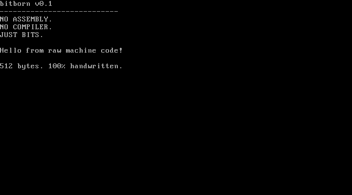

HANDWRITTEN MACHINE CODE / X86 BIOS
Software born
from raw bits.
We skipped the programming language.
We skipped the assembler.
We wrote the machine code ourselves.
No C. No Rust. No Assembly. No compiler.
Just 0s and 1s.
bitborn v0.1 --------------------------- NO ASSEMBLY. NO COMPILER. JUST BITS. Hello from raw machine code! 512 bytes. 100% handwritten.
YOUR NEXT EXPERIMENT
Edit. Step. Repair.
Inspect the literal bytes, predict a result, then test it. Browser instruments use a bounded teaching model; the curated boot programs are also executed in QEMU.
Build a boot sector ↗
Flip a greeting bit, inspect instruction boundaries and download the exact image.
REGISTERS · FLAGS · STACKWatch the CPU model ↗
Step through literal programs with live register bits, memory and breakpoints.
22 CHALLENGES · 4 LEVELSRepair the bits ↗
Follow hints, fix machine code and keep your progress locally in this browser.
01 / REMOVE THE TRANSLATOR
The CPU never
needed your language.
Normally, source code becomes machine code through a compiler or assembler. Here, we start at the other end. The canonical source is the binary encoding itself.
10111000 00101010 00000000Three handwritten bytes. An opcode and a little-endian operand.
./tools/bitpackHost-side Python turns each eight-digit group into one byte. No instruction translation.
qemu-system-i386BIOS loads the sector at 0x7C00. The x86 CPU executes the bytes.
02 / INTERACTIVE BINARY PLAYGROUND
One bit changes everything.
Click a bit. Inspect the bytes. See what the instruction means. Mnemonics below explain encodings; they never generate the target program.
CLICK ANY BIT TO FLIP IT · LEFTMOST BIT = MOST SIGNIFICANT
Tab enters the bits once. Arrows move between bits/bytes; Home/End move within a byte, Ctrl/Cmd + Home/End across the instruction. Enter/Space toggles the focused bit.
B8 2A 00Inspection context: 16-bit default.
03 / VISUAL BOOT EXPLORER
512 bytes.
No hidden machinery.
This map comes from the real boot image. Inspect every byte, find the instruction boundaries, and follow the output loop in a bounded teaching model.
OFFSET 0x000 → 0x1FF CLICK OR USE ARROW KEYS
Awaiting first instruction.
SOURCE IMAGE SHA-256 loading…
04 / THE REAL MACHINE
This one
actually boots.
The browser examples above are teaching models. This capture comes from the handwritten boot image running in QEMU, using BIOS teletype output.
512-byte boot image ↓ · SHA-256 checksums · Canonical bits
x86 · legacy BIOS · 16-bit real mode
Educational experiment, not a production OS.

05 / THE EXAMPLES
Small programs.
Big understanding.
Each example has binary source, an execution environment, annotations, and a reproducible validation path. Open the source before changing a bit.
06 / THE BOUNDARY MATTERS
Handwritten target.
Ordinary host tools.
The unusual part is the source of the executable instructions. Everything surrounding it stays practical, transparent, and reproducible.
The bytes that execute
- Manual eight-bit groups in
.bitsfiles - Opcode, operands, data, padding, signature
- BIOS real mode, starting at 0x7C00
- No assembler or compiler in the target path
The tools that explain
bitpackconverts notation into bytesbitinspectshows boundaries and annotationsbitverifychecks the reproducible imagebitdiffidentifies individual changed bits
07 / KEEP GOING DOWN
A small beginning.
A visible path.
Every milestone earns its place with reviewed bytes and execution checks. The progress feed below is generated from the repository ROADMAP.md at every website build.
Loading current source progress…
Read the roadmap and evidence →08 / QUESTIONS, ANSWERED
Wait. Just bits?
Isn't all software eventually binary?
Yes. The distinction is where it begins. In bitborn, instruction bytes are authored directly as literal binary digits using AI-assisted editing. A compiler or assembler never chooses the target instruction encodings.
Does “no Assembly” mean no instruction names?
No. Documentation uses mnemonics such as MOV to explain a byte sequence. They are explanatory labels, not target source passed to an assembler.
Can I boot this on a modern computer?
The tested environment is QEMU’s x86 machine with legacy BIOS. Native UEFI does not load this raw sector as an EFI executable. Use the documented emulator commands.
Are the browser tools running the boot image?
The browser tools decode bytes and simulate a bounded subset of 16-bit instructions. They are educational JavaScript, not native execution or a complete x86 emulator. The separate QEMU capture shows real boot execution.
Why do this at all?
To make the invisible visible. Instruction fields, byte order, relative branches, BIOS calls, and boot signatures become decisions you can inspect rather than details hidden by a toolchain.
OPEN SOURCE / MIT LICENSE
The next byte
could be yours.
Study an encoding. Improve an explanation. Add a verified experiment.
Make every bit count.